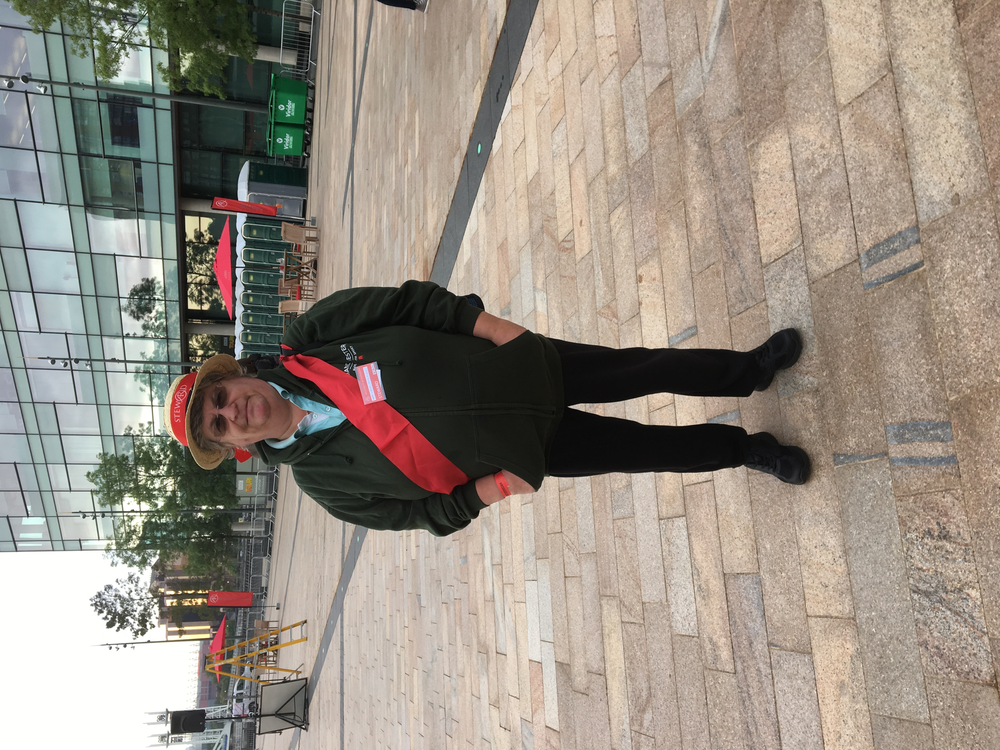

|
|
Events of 2018 Part 2
July 2018
England v India T20The first T20 of the series with India was a day/night match at Old Trafford. England batted first and made 159 for 8, with Jos Buttler scoring 69 off 46 balls. India were never in trouble, scoring 163 for 2, with Kannaur Lokesh Rahul 101 not out off 54 balls. The Indian crowd were as raucous as usual, and the win made them even happier than usual.
Sarah Millian
I travelled over to Buxton Opera House for the latest touring show from Sarah Millican, entitled Control Enthusiast. It was as filthy and funny as all her shows. Face ache for hours from all the laughing

{kind=link}
August 2018
The Antiques RoadshowA very different type of volunteering was next up. Stewarding at the filming of the Antiques Roadshow at Manchester's Media City UK. We were an interesting mix of Media Studies students from the local colleges, and the usual motley MCRVIP crew. We turned up the day before for our briefing and I took the opportunity to have a look at Petra's statue in the Blue Peter garden and the Blue Peter bee, one of a number dotted around the city centre this summer. We turned up on the day at 8am for a briefing, before the gates opened at 9am, to be greeted by a large queue already in place. There was also an enormous Canadian totem pole 10 metres long and apparently weighing almost two tonnes, with a couple of Native Americans singing and drumming. We donned our straw boaters and sashes, and took up our assigned positions. Mick and Hill were on the reception desk, Val and Peter were on Pictures and Prints, and I, plus a student, were on Silver.
The system is, everyone goes first to the reception desk, where a group of antique experts peruse the offerings, and give you a card, telling you which expert desk to go to. e.g. Arms & Militaria, Ceramics & Glass, Miscelaneous. Our job at the expert tables was to keep the queue moving but prevent too much crowding of the expert.
Also, some people had sent in pictures of items in advance, and they had been given a card to bypass the reception desk and go straight to the waiting area. This meant that the experts could be filming something at the start of the day, without waiting for something good to show up at the desks. It is expensive to have the camera crew et al standing around doing nothing for too long. If the expert finds something of interest at their desk, they stop telling the owners about it, write down what they've got, and send the people to the holding area. Producers then check out what they've got overall, and if it's to be filmed, you get whisked away to the Green room to wait to be filmed. As we were at Media City, close to the TV studios, there was the option to go and have your makeup done.
Our expert was the Scotsman, Gordon Foster, who was lovely, both to us stewards and all the punters. He never said a bad word about anything, however tatty is was. I started the day knowing nothing about silver, but by the end of the day coud easily spot EPNS from the real thing. One family brought a suitcase of Indian made silver to his table. His advice was, at present, it has little value, but it is likely to be more valuable in years to come. A newbie expert, Kate Flitcroft, who usually does Jewellery, was drafted in to our table when Gordon went off to film some silver brought in by a local church. Fiona Bruce is taller than I was expecting.
Apart from lunchtime when we got fed in the BBC canteen, we were on our feet all day. The students were flagging halfway throught the day, and couldn't beleive we oldies were still going strong. Once the Silver queue had finished for the day, we could hand in our boaters and sashes and become part of the watching crowd, as the numbers of the general public had dropped. I ended up watching expert John Axford who was filmed looking at an 18th-century 'puzzle jug'. Little did I know that that would be the first item shown on the first of two episodes they got out of the day, and that I would be particularly prominent. Peter and Barbara were also to the fore later in the programme. We were all wearing our tennis hoodies, but three different colours.

September 2018
A trip to Old Trafford was next on the list of things to do, to have my ICC Cricketeer Interview, to be a volunteer at the 2019 ICC Cricket World Cup. The pitch at Old trafford had been de-turfed and looked very different, and we got a great view as we did the interviews in the Media Centre. Val and Dave were doing interviewing, but they had made sure they didn't interview any of us Lancashire regulars. We tried on some kit,and played a few games.October 2018
A new sport to volunteer for - Taekwondo. Manchester had hosted a World Grand Prix event for a number of years, but the previous year, they had taken the event to London, staging it at the Copperbox. That meant this year we had a mix of volunteers. There were the Manchester lot who were glad the event was "back home", plus there were the lot who came up from London, who seem to think they knew everything, and could tell us Mancs what to do.I was part of the Accreditation team, so we started work before the competition proper. Although the competition was taking place at the Regional Indoor Aren, we were based in a room at the Park Inn Radisson Hotel in Central Manchester, not far from the Manchester Arena. That was because the World Championshps were taking place at the Arena in 2019 and this was a bit of a dress rehearsal.
 The Mancs were represented by Roberta, Pui and me, and the Copperboxers, as I christened them, by our supervisor, Amanda, Jenny, Gillian and
Marissa. There were also Sarhej, from the company who had written the software that dealt with membership, and printed the actual accreditation
and Rhiannon, who was an intern with British Taekwondo. The team overall had to collect the entrance fees, in cash and dollars only, before
giving out the bag that contained the teams passes and participation certificates. Those certificates were originally printed out in one big
pile, and had to be sorted into alphabetical athlete name order, and then each teams list picked out for their bag. Organised chaos ensued. Sarhej
was a bit of a Tartar, but he was under a tremendous amount of stress as the system was still a work in progress in part.
The Mancs were represented by Roberta, Pui and me, and the Copperboxers, as I christened them, by our supervisor, Amanda, Jenny, Gillian and
Marissa. There were also Sarhej, from the company who had written the software that dealt with membership, and printed the actual accreditation
and Rhiannon, who was an intern with British Taekwondo. The team overall had to collect the entrance fees, in cash and dollars only, before
giving out the bag that contained the teams passes and participation certificates. Those certificates were originally printed out in one big
pile, and had to be sorted into alphabetical athlete name order, and then each teams list picked out for their bag. Organised chaos ensued. Sarhej
was a bit of a Tartar, but he was under a tremendous amount of stress as the system was still a work in progress in part.The day the competition started, we had moved operations over to the Regional Indoor Arena. Only Jenny and I were left to help Rhiannon and Sarhej, as the others had moved over to VIP's and Ceremonies. Five minutes before opening time, Jenny and I were there, but nobody else. Rhiannon arrived just as we opened up, but there was no sogn of Sarhej. This was a major problem because despite us having loads of pre-printed passes on the tables in front of us, none of them seemed to be the ones for the people showing up. And, although Rhiannon had a laptop, it took ages to get it connected to the network, and even then, she had no permission to print to the printer/copier. She was mega stressed.
They had to phone Sarhej at his hotel to get him out of bed, and over to us. He said, he had got the opening time confused. Eventually, despite having to use a memory stick to connect to the printer/copier to print outpasses, we started to issue accreditation. Jenny and I were in full time apology mode, and never so pleased to be able to use the phrase, "I'm just a volunteer". Eventually, the stress got too much for Rhiannon and she disappeared with her boss for a cry.
The rest of the Mancs had arrived as they were on teams involved with the actual competition, including manning the video cameras in the corner of the mat. Hills and Mick were on video duty.